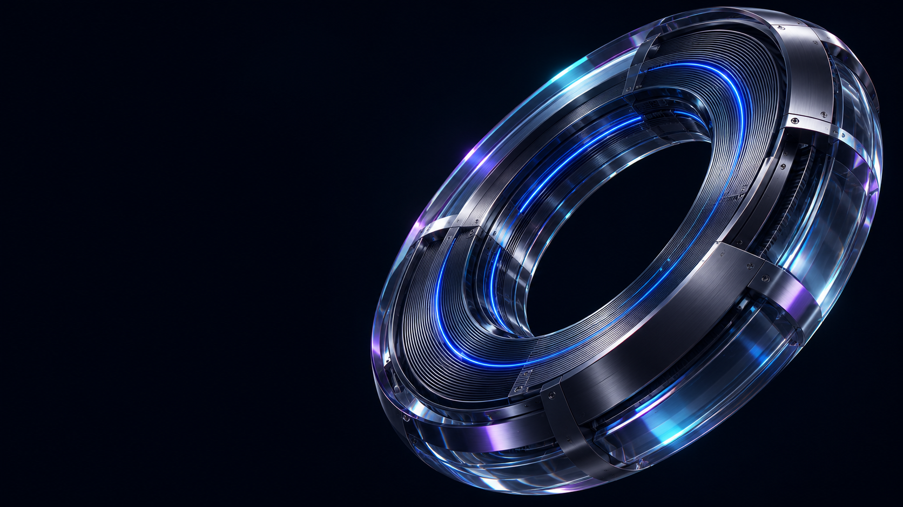
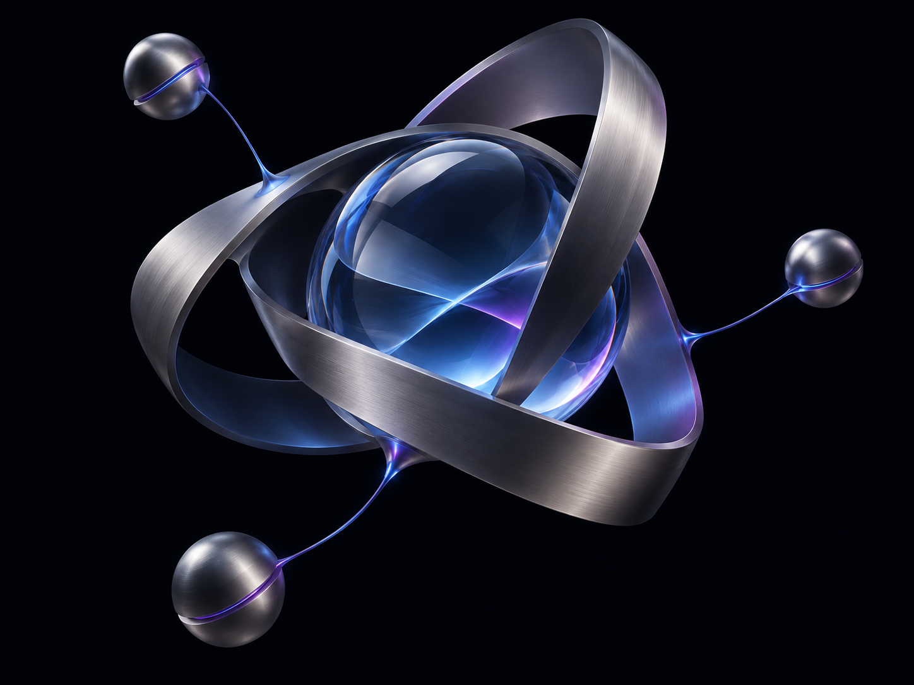

COGNITIVE SYSTEMS
Artificial Intelligence
以模型理解世界，让智能走向真实场景。
↗
PULSAR — AN EXPLORATION OF TOMORROW
让智能，突破边界。
以技术连接想象，以创新重塑可能。
未来不止于想象。
它在每一次连接中，逐渐成形。
星脉 PULSAR，连接研究、技术与产业。我们探索智能系统与数字基础设施的交汇，让复杂的问题，拥有更清晰的答案。
Discover our thinking ↗ENGINEERED FOR WHAT'S NEXT
从认知到计算，从数据到连接。
为下一代数字世界，构建底层能力。
以模型理解世界，让智能走向真实场景。
↗灵活、敏捷的计算底座，承载每一次突破。
↗穿过数据的噪声，发现连接背后的洞察。
↗IDEAS INTO IMPACT
从技术构想到场景应用。
探索智能与产业相遇的新方式。
面向跨地域协作的智能连接平台概念。整合信息、研究与工作流，让复杂协同变得自然。

让计算更接近现场。
以分布式架构，探索实时智能的更多可能。
A VISION OF SCALE
概念场景指标 · 非实际经营数据
Global connections
Data possibilities
Availability target
Intelligent operations
SIGNALS FROM THE FUTURE
THE NEXT CHAPTER STARTS WITH YOU
让下一次突破，从一次对话开始。
研究交流 / 技术探索 / 产业合作